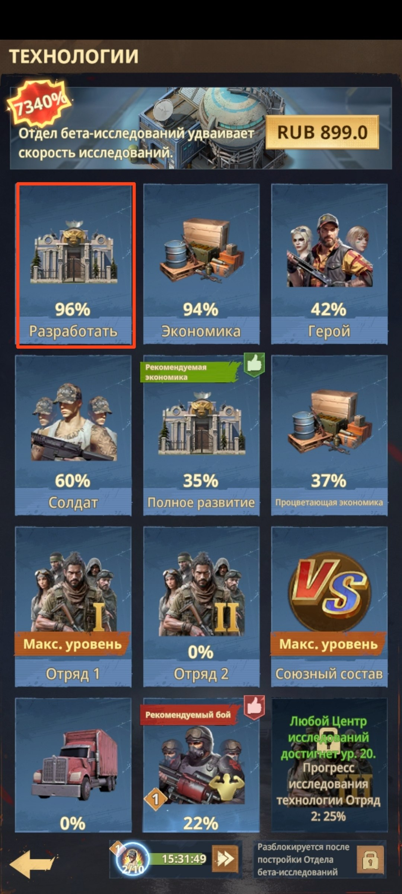
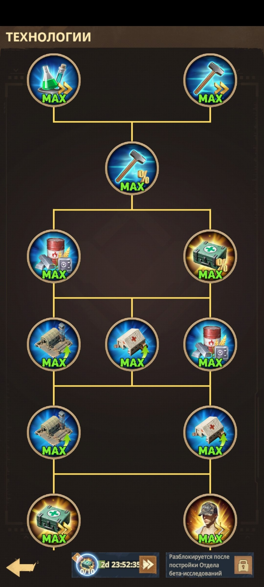

🏗️ Ветка «Разработать» — подробно
🏗️ ВЕТКА «РАЗРАБОТАТЬ» Эта ветка помогает развивать базу, войска и ключевые игровые процессы. По мере прокачки вы получаете полезные бонусы: 🏗️ Увеличение скорости строительства - здания и улучшения запускаются быстрее. 💰 Снижение расходов ресурсов - на строительство и улучшение требуется меньше материалов. 💉 Ускорение лечения - раненые солдаты быстрее возвращаются в строй из Госпиталей. 🪖 Больше тренируемых солдат - увеличивается количество бойцов, которых можно одновременно обучать на Полигоне. ⚙️ Дополнительные бонусы развития - ветка усиливает связанные механики и помогает быстрее развивать аккаунт. 💡 Перед выбором следующей технологии смотрите на требования ветки и выбирайте бонусы, которые сильнее всего помогают вашему текущему этапу развития.

🏗️ Выбор ветки «Разработать» в меню технологий

🌳 Дерево исследований ветки «Разработать»